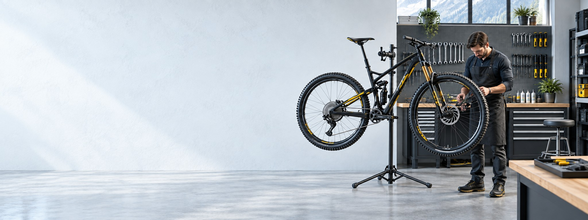

Мастерская
Разберитесь в устройстве велосипеда и найдите нужные работы.

Выбрать работы
Ознакомьтесь с направлениями обслуживания и составьте список интересующих работ. Стоимость и возможность выполнения уточните по телефону.
Посмотреть работыУстройство велосипеда
Наглядный справочник поможет понять, как называются узлы велосипеда и за что они отвечают.
Открыть справочникПерейти в сервис
Диагностика, настройка и обслуживание. На странице сервиса можно изучить услуги и позвонить в магазин.
Открыть сервис